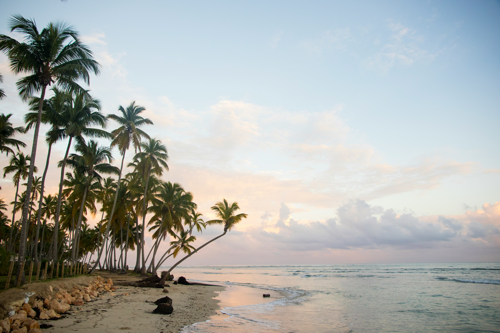

Places
Discover the stunning beaches of the Dominican Republic, from Punta Cana to Samaná.
Discover the beauty and culture of the Dominican Republic.
Explore the beauty, culture, and cuisine of the Dominican Republic.

Discover the vibrant islands, rich history, and delicious local dishes that make the Dominican Republic a must-visit destination.
Discover the stunning beaches of the Dominican Republic, from Punta Cana to Samaná.
Immerse yourself in the rich history and vibrant culture of the Dominican Republic, from traditional music to local festivals.
Taste the delicious local cuisine of the Dominican Republic, from traditional dishes to fresh seafood.